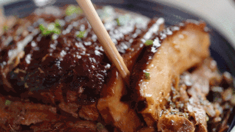
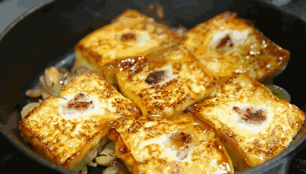
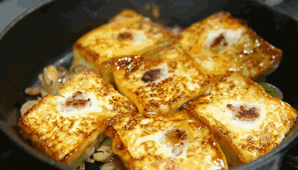
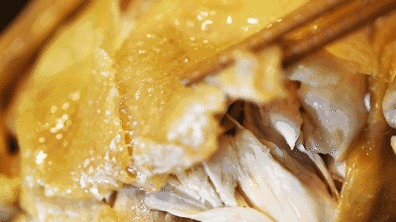
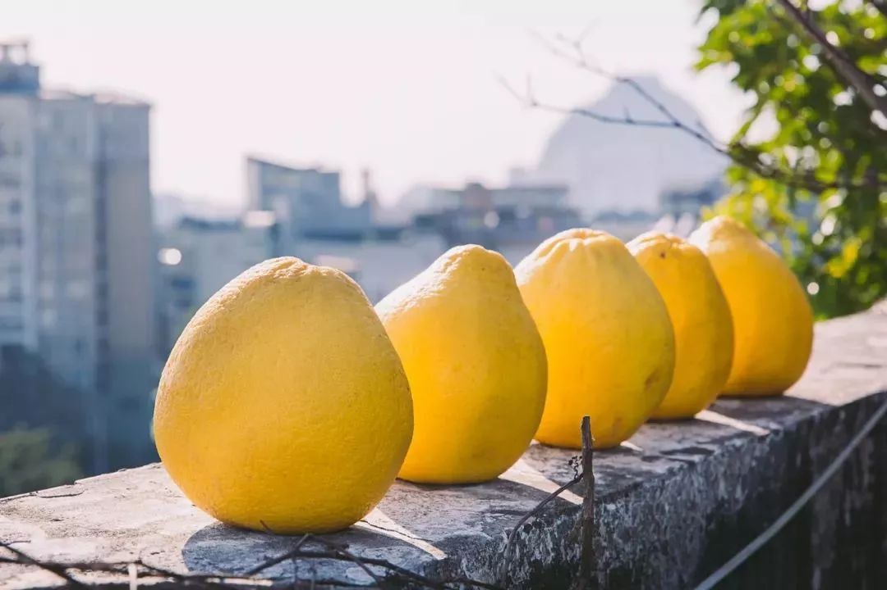
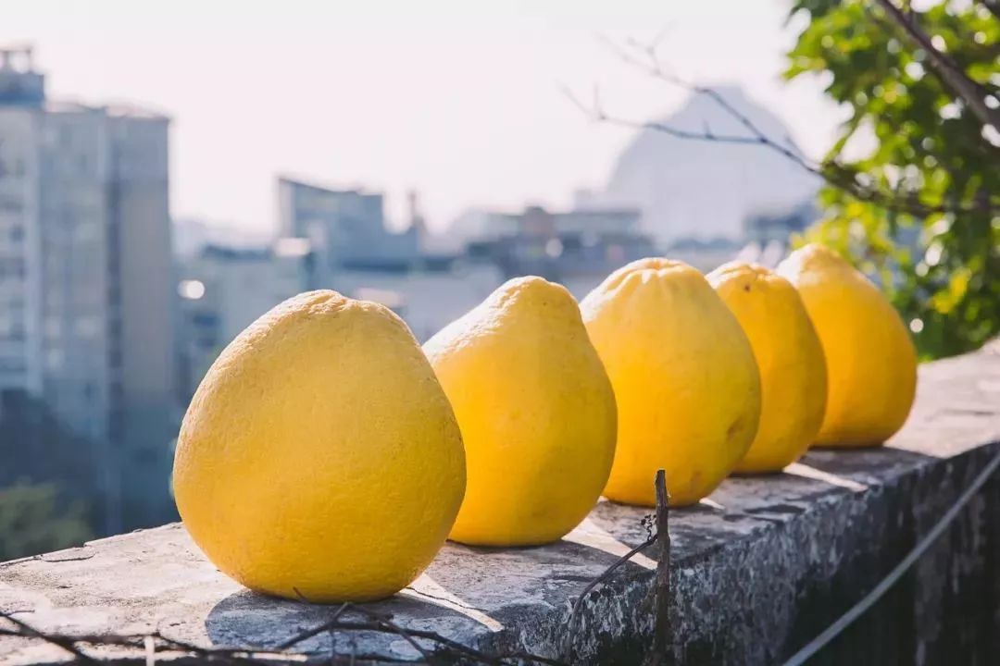

味在广东，吃在梅州
梅州美食

要说美食，
食在广州，厨出凤城，
味在潮汕，吃在梅州。
这里有与广府、潮汕美食
“三足鼎立”的客家菜，
还有多到数不清的各式小吃……，
食在广州，厨出凤城，
味在潮汕，吃在梅州。
这里有与广府、潮汕美食
“三足鼎立”的客家菜，
还有多到数不清的各式小吃……，
客家酿豆腐也称为肉末酿豆腐、东江酿豆腐，是客家名菜之一，是东江传统风味名菜，也是客家饮食文化中极具代表性的一道传统菜品。
通常将油炸豆腐或白豆腐切成小块，在每小块豆腐中央挖一个小洞，用香菇、碎肉、葱蒜等佐料填补进去，然后用砂锅小火长时间煮，食时再配味精、胡椒等调料即可。 
通常将油炸豆腐或白豆腐切成小块，在每小块豆腐中央挖一个小洞，用香菇、碎肉、葱蒜等佐料填补进去，然后用砂锅小火长时间煮，食时再配味精、胡椒等调料即可。 

盐焗鸡是中国各大菜系最具特色的烹调技艺，它的形成与客家人的迁徙生活密切相关。
在南迁过程中，客家人搬迁到一个地方，经常受异族侵扰，难以安居，被迫又搬迁到另一个地方。
在居住过程中，每家每户均饲养家禽、家畜。在“逃亡”、迁徙过程中，活禽不便携带，便将其宰杀，放入盐包中，以便贮存、携带。到搬迁地后，这些贮存、携带的原料可以缓解原料的匮乏，又可滋补身体。
盐焗鸡就是客家人在迁徙过程中运用智慧制作，并闻名于世的菜肴。
在南迁过程中，客家人搬迁到一个地方，经常受异族侵扰，难以安居，被迫又搬迁到另一个地方。
在居住过程中，每家每户均饲养家禽、家畜。在“逃亡”、迁徙过程中，活禽不便携带，便将其宰杀，放入盐包中，以便贮存、携带。到搬迁地后，这些贮存、携带的原料可以缓解原料的匮乏，又可滋补身体。
盐焗鸡就是客家人在迁徙过程中运用智慧制作，并闻名于世的菜肴。
沙田柚原产于广西容县，由于梅州人引进后，进行数百年的技术改进和品种改良，使得梅州成为中国最大的梅州沙田柚生产基地。
据统计，2010年梅州市沙田柚种植面积达到1.834万hm²，投产面积1.796hm²，产量达到26.99万t。
梅州沙田柚外观美观，色泽鲜黄，受到广大消费者的欢迎，被誉为“柚中之王”

据统计，2010年梅州市沙田柚种植面积达到1.834万hm²，投产面积1.796hm²，产量达到26.99万t。
梅州沙田柚外观美观，色泽鲜黄，受到广大消费者的欢迎，被誉为“柚中之王”
